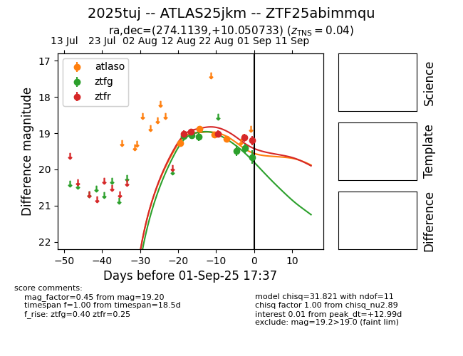

Target 2025tuj at 2025-08-26 20:12, see:
FINK: fink-portal.org/ZTF25abimmqu
Lasair: lasair-ztf.lsst.ac.uk/objects/ZTF25abimmqu
ALeRCE: alerce.online/object/ZTF25abimmqu
TNS: wis-tns.org/object/2025tuj
YSE: ziggy.ucolick.org/yse/transient_detail/2025tuj
alt names
ZTF25abimmqu (ztf,fink)
2025tuj (tns,yse)
ATLAS25jkm (atlas)
coordinates:
equatorial (ra, dec) = (274.1139,+10.05073)
galactic (l, b) = (38.0435,+12.28773)
photometry
last atlaso=19.12, ztfg=19.09, ztfr=19.01
4 atlaso, 3 ztfg, 3 ztfr detections
